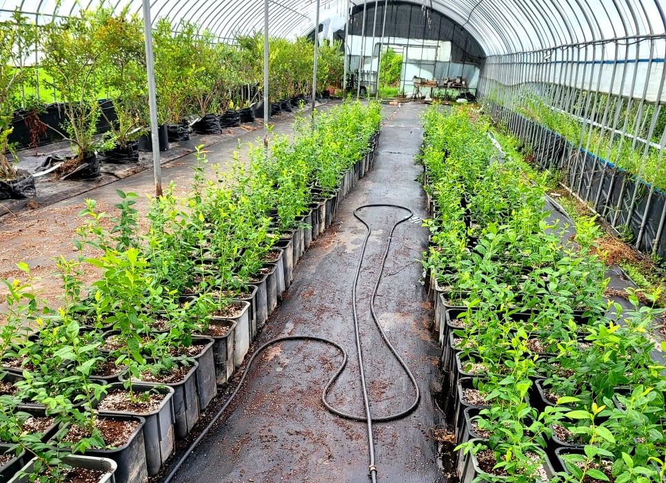
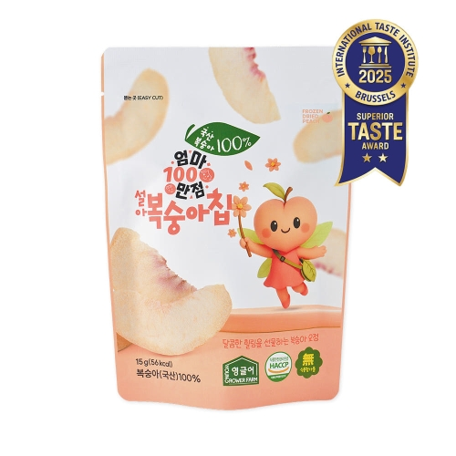
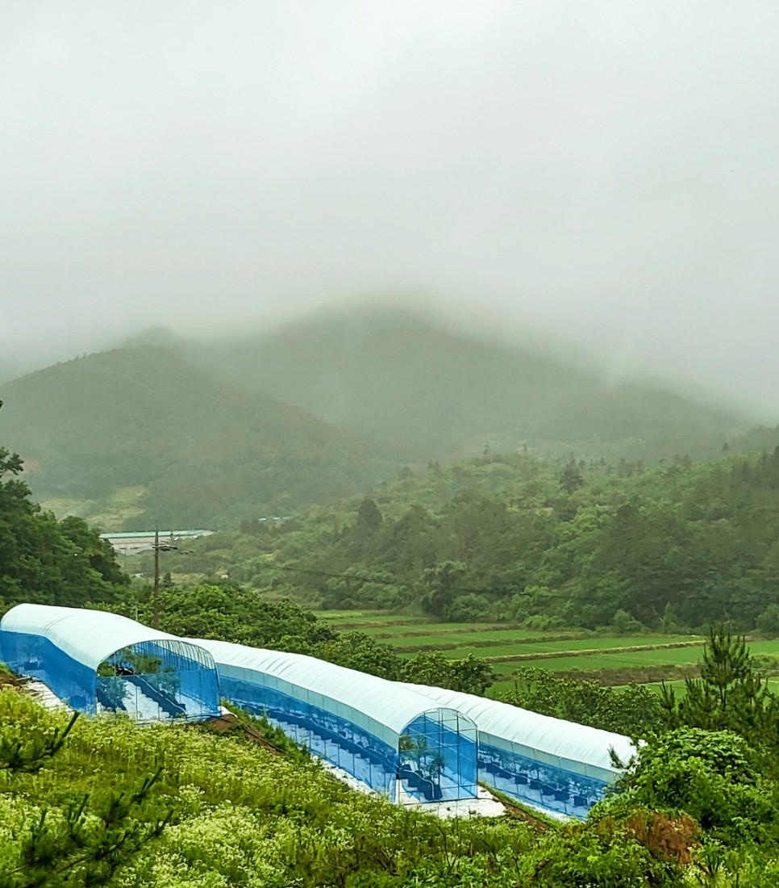

직접 기르는 농업에서,
매일 만나는 먹거리 브랜드로
영글어농장은 재배·스마트팜·농산물 유통을 바탕으로 성장했습니다. 그 경험을 신선 농산물과 엄마만점, 보위강 등의 제품으로 이어가고 있습니다.

영글어농장이라는 이름
YOUNG GROWER FARM에는 젊은 재배자들이 모여 농업의 변화를 만들어 간다는 뜻이 담겨 있습니다. 과학적인 재배, 합리적인 유통구조와 신품종 개발이 농장을 운영하는 방향입니다.
파프리카, 딸기, 토마토, 허브와 블루베리 등 다양한 작물을 길러 온 경험을 바탕으로 농산물의 쓰임을 넓혀 갑니다.

작물을 살피는 스마트한 농업
공식 브랜드 소개에서는 유리온실의 블루베리 스마트팜과 전 농장 모니터링 시스템을 소개합니다. 작물과 환경을 살피는 체계를 바탕으로 생산 기반을 발전시킵니다.
친환경 농업과 국내 생산을 지향하며, 블루베리·딸기·멜론·고추·감자·엽채류 등 여러 작물을 재배해 왔습니다.
재배 현장 알아보기 ↗
생산의 정성을 신선하게 전합니다
직접 기른 농산물을 대형마트, 백화점, 슈퍼와 농협유통 등 여러 채널로 연결합니다. 복잡한 유통구조를 개선해 생산자에게는 농산물의 가치를, 소비자에게는 신선한 먹거리를 전달하고자 합니다.
2011년 이마트 시범 직거래를 시작으로 납품망을 넓혀 온 과정은 회사 연혁에서 확인할 수 있습니다.
유통망 확대의 발자취 ↗엄마만점 · 과일을 즐기는 다양한 방식
엄마만점은 영글어농장의 과일칩·분말·과즙 제품에서 만날 수 있는 이름입니다. 딸기, 블루베리, 감귤과 설아복숭아 등을 동결건조 칩으로 선보이고, 블루베리와 딸기는 분말 제품으로도 소개합니다.


2025년 7월 공식 연혁에는 설아복숭아칩의 벨기에 국제식음료품평회 2스타 수상과 동결건조 과일칩의 뚜레쥬르 입점이 기록돼 있습니다.
동결건조 과일칩 제품군 ↗보위강 · 현미와 버섯을 연결합니다
보위강은 상황버섯과 동충하초를 활용한 버섯쌀·진액·분말 제품군으로 소개됩니다. 공식 연혁에는 2024년 6월 보위강 진액, 8월 보위강 버섯쌀 출시가 기록돼 있습니다.


현미를 활용한 제품 개발은 밥으로 먹는 버섯쌀과 버섯쌀을 함유한 현미칩 등으로 이어집니다. 제품별 원재료와 구성은 상세 제품 정보를 통해 확인할 수 있습니다.
보위강 버섯쌀 알아보기 ↗고객과 사회를 위한 지속적인 노력
2008년 설립 이후 고객과 사회의 이익을 위해 연구하고 발전해 왔습니다. 지속적으로 양질의 서비스를 제공하고, 풍요롭고 쾌적한 환경을 만들어 가는 기업을 지향합니다.
